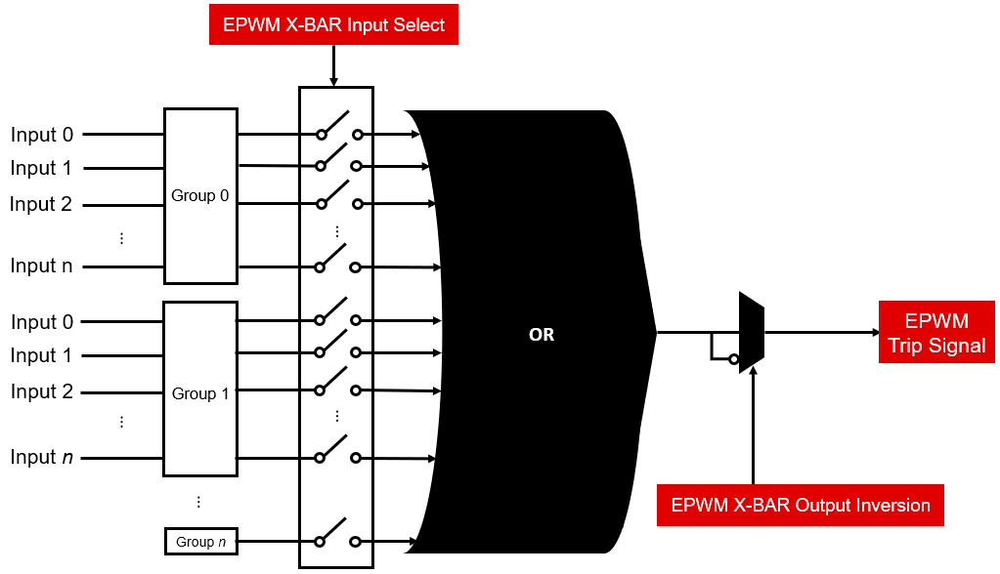
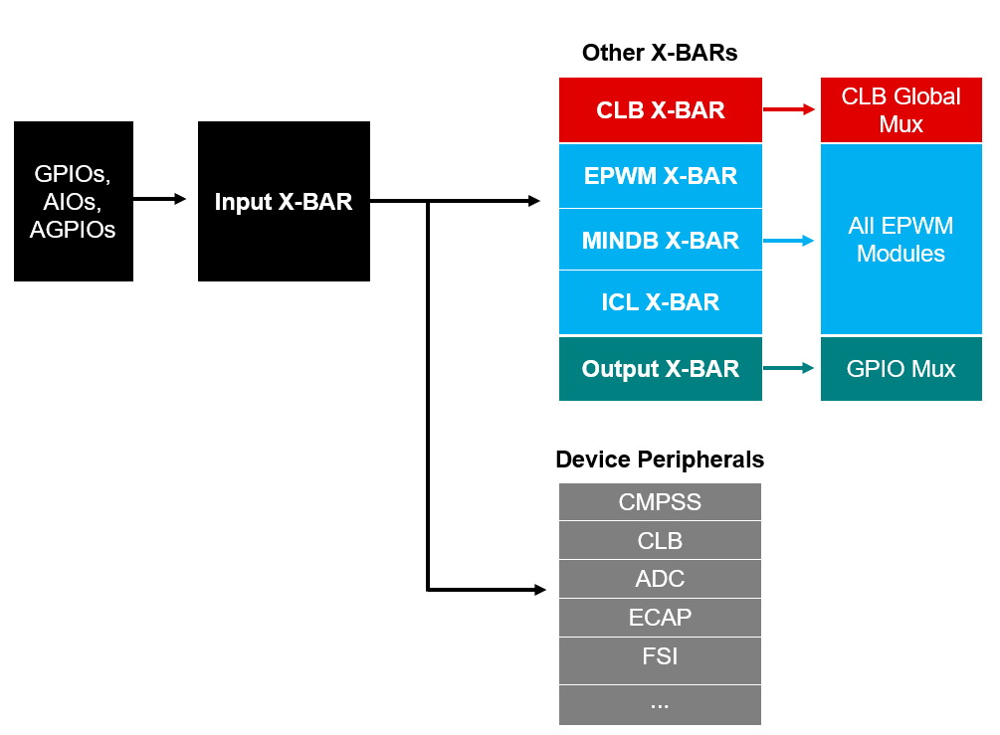

Crossbars (X-BAR)#
Overview#
In this module, you will:
Learn about the general function of X-BAR modules on C29x devices
Explore use cases of specific X-BAR examples
Understand the benefits of leveraging X-BAR to increase connectivity between peripherals
Introduction#
The crossbar modules (X-BAR modules) provide additional connectivity between device inputs, outputs, and internal resources. In doing this, the X-BAR modules expand the functionality of other peripherals on the device and give the user more flexibility in their application without CPU intervention. There are 6 types of X-BARs in C29x devices:
Input X-BAR
Output X-BAR
CLB X-BAR
ePWM X-BAR
MINDB X-BAR
ICL X-BAR
What are X-BARs?#
Each of the X-BARs are named according to where the outputs of that X-BAR module are connected to. For example, the Output X-BAR module connects device pins and internal signals that are not routed to device pins via the GPIO mux directly. Similarly, the EPWM X-BAR connects internal device signals to the EPWM modules to be used for generating EPWM outputs.
With the exception of the Input X-BAR, each X-BAR module has a very similar structure. For each type of X-BAR module, there are multiple instances present on a given C29x device. You can refer to your device’s documentation to see how many instances of each X-BAR module are present. Shown below is one instance of an EPWM X-BAR block diagram:


Figure 1: EPWM X-BAR Diagram#
The output of each X-BAR is the result of an OR gate. The OR gate’s inputs are separated into groups and connected to a switch that enables or disables that input. This is merely a method of organizing the inputs; no additional logic is implemented within groups. Each group has its own register to enable or disable its inputs. There is also the option to invert the output of the OR gate before it reaches the final output of the X-BAR.
Input X-BAR#
The Input X-BAR differs from the other X-BARs in that it uses a mux instead of an OR gate. All digital inputs to the device are inputs to the Input X-Bar module. Only one input can be selected per instance of Input X-BAR. There are no enable bits or switches for the inputs for an Input X-BAR instance since only one input can be selected at a time. There is no option to invert the output of an Input X-BAR instance.
Application of X-BARs#
The flexibility and reusability of the X-BARs can solve many design problems or help to provide information for debugging that would not be available otherwise. Below is an example configuration showcasing how X-BARs can be leveraged to obtain useful debug information.
Scenario: The Input X-BARs have the advantage of reading the state of a GPIO without that GPIO needing to be configured as an input. For example, the Input X-BAR can read the state of an EPWM, even though the EPWM is configured as an output. The output of the Input X-BAR instance can then be used as an input to the Output X-BAR module. The output of this Output X-BAR instance can then be connected to a GPIO that can be probed by the user. This method allows you to expand the selection of device pins that can be used for an EPWM output.
Figure 2 below shows how inputs and Input X-BAR can be connected to the Output X-BAR, EPWM X-BAR and CLB X-BAR:


Figure 2: X-BAR Block Diagram#
X-BAR Module |
Inputs |
Output Connections |
|---|---|---|
Input X-BAR |
Digital device pins (GPIOs, AIOs, AGPIOs) |
Internal device signals* |
Output X-BAR |
Internal device signals* |
GPIOs |
CLB X-BAR |
Internal device signals* |
CLB Input Mux |
EPWM X-BAR |
Internal device signals* |
EPWM Trip Sources |
MINDB X-BAR |
Internal device signals* |
EPWM MINDB + ICL Logic |
ICL X-BAR |
Internal device signals* |
EPWM MINDB + ICL Logic |
*Refer to your device-specific TRM for specific connections to each X-BAR module.
Test Your Knowledge!#
Question 1
Which X-BAR would you use to connect external digital signals to use internally within the device?
Answer
Input X-BAR
Question 2
Which X-BAR module’s architecture is based on a mux instead of an OR-gate?
Answer
Input X-BAR
Summary#
The X-BARs provide additional interconnectivity across various peripherals within the device. This allows the user to implement creative solutions to complex design problems without CPU intervention, which is crucial in real-time applications. Refer to your device- specific TRM for specific connections and additional features offered by each X-BAR module.